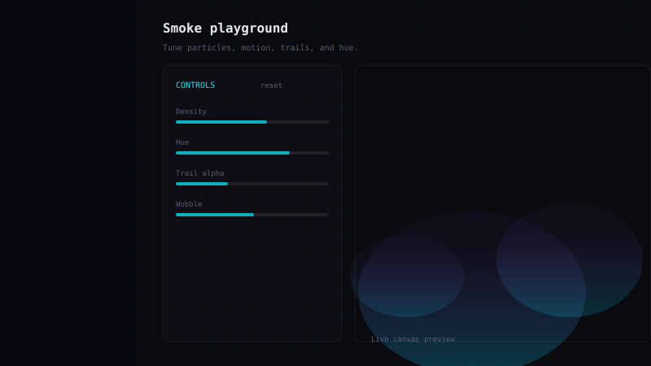

Case study · visual systems
Smoke playground
A canvas particle system that powers both an optional ambient layer on the home page and a full control-panel playground — one engine, two experiences, zero frameworks.
Problem
The site needed more than static cyberpunk styling — something that felt alive without bloating the stack. I wanted to practice animation loops, input wiring, and performance-minded rendering while keeping the main site plain HTML and CSS.
Approach
All smoke logic lives in a single module, smoke-engine.js, that owns the
particle array, spawn rules, trail fade, and requestAnimationFrame loop.
Two thin entry scripts plug in different param objects and sizing:
-
Home — full-window canvas behind the grid, toggled off by default,
respects
prefers-reduced-motion. - Playground — range inputs mutate one shared params object; the engine reads it every frame so sliders feel instant.
Device pixel ratio is capped at 2 so retina screens stay sharp without over-allocating the backing buffer.
Screens
// 3 views


Tradeoffs
- Trails over full clear — semi-transparent rectangle clears each frame for soft persistence; cheaper than redrawing every puff from history.
- Param object vs. many arguments — easier to tune from HTML sliders; the engine stays dumb and reusable.
- SVG illustrations here — lightweight stand-ins until I capture real browser shots; the live demo is the source of truth.
Source files
- src/js/smoke-engine.js — particle loop, resize, start/stop
- src/js/smoke-home.js — home overlay + toggle
- src/js/smoke-playground.js — control panel wiring
- src/smoke-playground.html — playground page markup